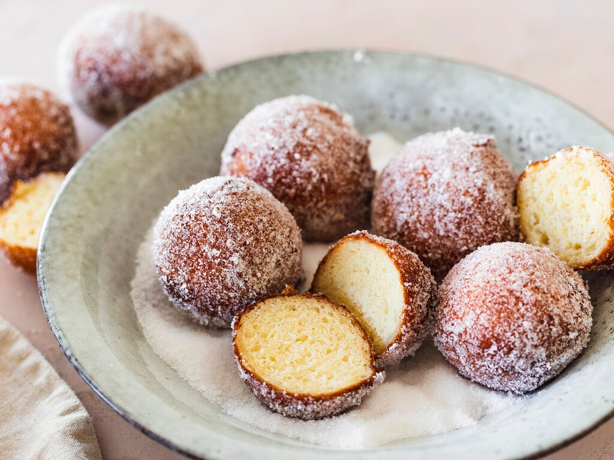

Quarkbaellchen

"Quark" is a type of dairy product that is popular in germany. It is somewhat similar to "Skyr" from Iceland. The most common way to translate it into english is as "curd cheese". "Quarkbaellchen" or "fried curd balls" are among germanies most popular pastries.
Ingedients
- 420ml quark (plain yoghurt as a replacement if quark is unavailable)
- 2 eggs
- 2 packets of vanilla sugar
- 400g flour
- 2 packets of baking powder
- 1L sunflower oil for frying
- Some icing sugar
Steps
- Mix ingredients in one bowl
- Pour the sunflower oil into a cooking pot and heat it up
- Form balls from the dough and put them into the cooking pot
- Once they are brown-ish, put them onto a plate
- Add some icing sugar